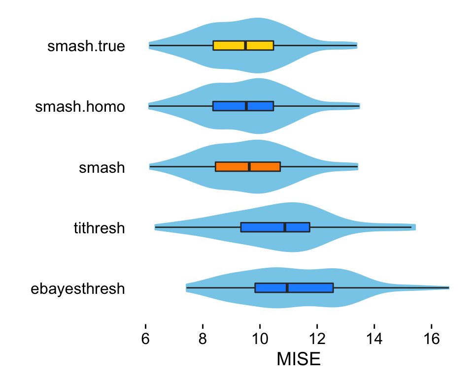
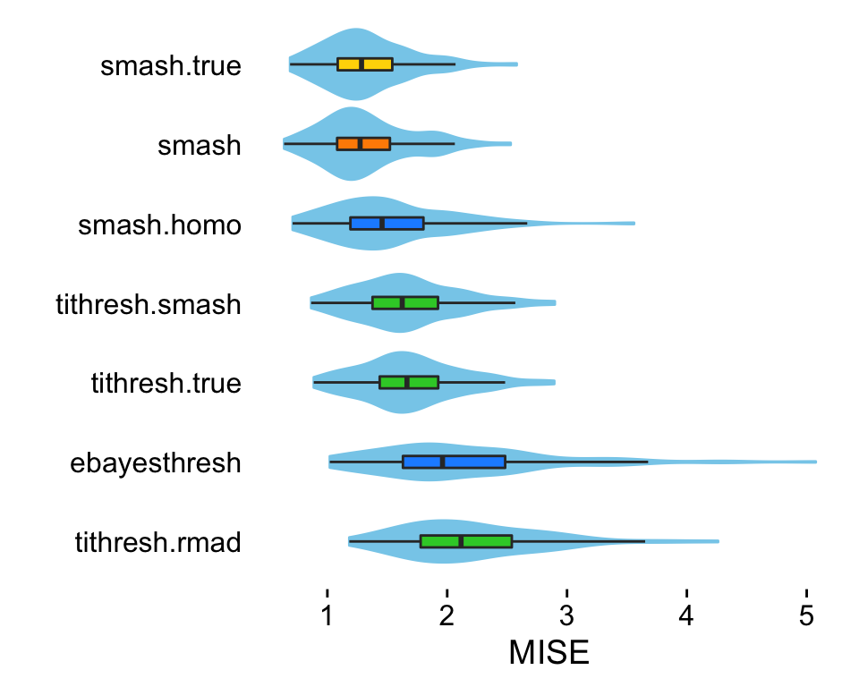
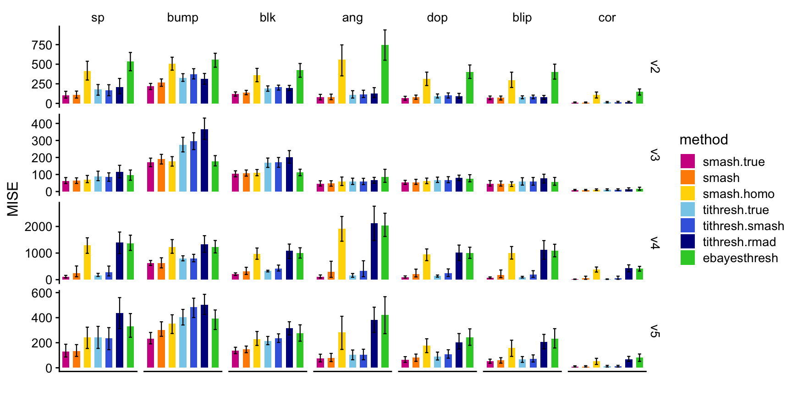

Gaussian mean estimation in simulated data sets
Zhengrong Xing, Peter Carbonetto and Matthew Stephens
Last updated: 2019-12-31
Checks: 7 0
Knit directory: smash-paper/analysis/
This reproducible R Markdown analysis was created with workflowr (version 1.6.0). The Checks tab describes the reproducibility checks that were applied when the results were created. The Past versions tab lists the development history.
Great! Since the R Markdown file has been committed to the Git repository, you know the exact version of the code that produced these results.
Great job! The global environment was empty. Objects defined in the global environment can affect the analysis in your R Markdown file in unknown ways. For reproduciblity it’s best to always run the code in an empty environment.
The command set.seed(1) was run prior to running the code in the R Markdown file. Setting a seed ensures that any results that rely on randomness, e.g. subsampling or permutations, are reproducible.
Great job! Recording the operating system, R version, and package versions is critical for reproducibility.
Nice! There were no cached chunks for this analysis, so you can be confident that you successfully produced the results during this run.
Great job! Using relative paths to the files within your workflowr project makes it easier to run your code on other machines.
Great! You are using Git for version control. Tracking code development and connecting the code version to the results is critical for reproducibility. The version displayed above was the version of the Git repository at the time these results were generated.
Note that you need to be careful to ensure that all relevant files for the analysis have been committed to Git prior to generating the results (you can use wflow_publish or wflow_git_commit). workflowr only checks the R Markdown file, but you know if there are other scripts or data files that it depends on. Below is the status of the Git repository when the results were generated:
Ignored files:
Ignored: dsc/code/Wavelab850/MEXSource/CPAnalysis.mexmac
Ignored: dsc/code/Wavelab850/MEXSource/DownDyadHi.mexmac
Ignored: dsc/code/Wavelab850/MEXSource/DownDyadLo.mexmac
Ignored: dsc/code/Wavelab850/MEXSource/FAIPT.mexmac
Ignored: dsc/code/Wavelab850/MEXSource/FCPSynthesis.mexmac
Ignored: dsc/code/Wavelab850/MEXSource/FMIPT.mexmac
Ignored: dsc/code/Wavelab850/MEXSource/FWPSynthesis.mexmac
Ignored: dsc/code/Wavelab850/MEXSource/FWT2_PO.mexmac
Ignored: dsc/code/Wavelab850/MEXSource/FWT_PBS.mexmac
Ignored: dsc/code/Wavelab850/MEXSource/FWT_PO.mexmac
Ignored: dsc/code/Wavelab850/MEXSource/FWT_TI.mexmac
Ignored: dsc/code/Wavelab850/MEXSource/IAIPT.mexmac
Ignored: dsc/code/Wavelab850/MEXSource/IMIPT.mexmac
Ignored: dsc/code/Wavelab850/MEXSource/IWT2_PO.mexmac
Ignored: dsc/code/Wavelab850/MEXSource/IWT_PBS.mexmac
Ignored: dsc/code/Wavelab850/MEXSource/IWT_PO.mexmac
Ignored: dsc/code/Wavelab850/MEXSource/IWT_TI.mexmac
Ignored: dsc/code/Wavelab850/MEXSource/LMIRefineSeq.mexmac
Ignored: dsc/code/Wavelab850/MEXSource/MedRefineSeq.mexmac
Ignored: dsc/code/Wavelab850/MEXSource/UpDyadHi.mexmac
Ignored: dsc/code/Wavelab850/MEXSource/UpDyadLo.mexmac
Ignored: dsc/code/Wavelab850/MEXSource/WPAnalysis.mexmac
Ignored: dsc/code/Wavelab850/MEXSource/dct_ii.mexmac
Ignored: dsc/code/Wavelab850/MEXSource/dct_iii.mexmac
Ignored: dsc/code/Wavelab850/MEXSource/dct_iv.mexmac
Ignored: dsc/code/Wavelab850/MEXSource/dst_ii.mexmac
Ignored: dsc/code/Wavelab850/MEXSource/dst_iii.mexmac
Untracked files:
Untracked: files.txt
Note that any generated files, e.g. HTML, png, CSS, etc., are not included in this status report because it is ok for generated content to have uncommitted changes.
These are the previous versions of the R Markdown and HTML files. If you’ve configured a remote Git repository (see ?wflow_git_remote), click on the hyperlinks in the table below to view them.
| File | Version | Author | Date | Message |
|---|---|---|---|---|
| Rmd | 703f5a2 | Peter Carbonetto | 2019-12-31 | wflow_publish(“gaussmeanest.Rmd”) |
| html | f780a43 | Peter Carbonetto | 2019-12-20 | Adjusted the bar chart settings. |
| Rmd | 70dedc0 | Peter Carbonetto | 2019-12-20 | wflow_publish(“gaussmeanest.Rmd”) |
| html | 3cdef11 | Peter Carbonetto | 2019-12-20 | Added bar charts to gaussmeanest analysis summarizing results of |
| Rmd | 02f9167 | Peter Carbonetto | 2019-12-20 | wflow_publish(“gaussmeanest.Rmd”) |
| html | c8548d5 | Peter Carbonetto | 2019-12-20 | Re-built gaussmeanest analysis after making some of the plotting code |
| Rmd | 4d7aae3 | Peter Carbonetto | 2019-12-20 | wflow_publish(“gaussmeanest.Rmd”) |
| html | 8998bb8 | Peter Carbonetto | 2019-12-20 | Re-built gaussmeanest analysis after Zhengrong’s recent additions. |
| Rmd | 85aa594 | Peter Carbonetto | 2019-12-20 | wflow_publish(“gaussmeanest.Rmd”) |
| Rmd | f0221c5 | Zhengrong Xing | 2019-10-27 | address some reviewer comments |
| html | f0221c5 | Zhengrong Xing | 2019-10-27 | address some reviewer comments |
| html | 74aff51 | Peter Carbonetto | 2018-12-20 | Re-built gauss_shiny_setup and gaussmeanest pages. |
| Rmd | 86da808 | Peter Carbonetto | 2018-12-10 | Added pointers to dsc/README in relevant R Markdown files. |
| html | 8caff70 | Peter Carbonetto | 2018-12-06 | Re-built the workflowr pages after several minor changes to the text |
| Rmd | c589dbb | Peter Carbonetto | 2018-12-06 | wflow_publish(c(“index.Rmd”, “gaussian_signals.Rmd”, |
| html | ee71f27 | Peter Carbonetto | 2018-12-04 | Made a few small adjustments to the text in the “gaussianmeanest” analysis. |
| Rmd | eb6cc34 | Peter Carbonetto | 2018-12-04 | wflow_publish(“gaussmeanest.Rmd”) |
| html | 05684ba | Peter Carbonetto | 2018-12-04 | Ran wflow_publish(“gaussmeanest.Rmd”) to populate the webpage. |
| Rmd | 9a67b48 | Peter Carbonetto | 2018-12-02 | Moved dsc results file. |
| Rmd | 049dcbb | Peter Carbonetto | 2018-11-08 | Moved around some files and revised TOC in home page. |
In this analysis, we assess the ability of different signal denoising methods to recover the true signal after being provided with Gaussian-distributed observations of the signal. We consider scenarios in which the data have homoskedastic errors (constant variance) and heteroskedastic errors (non-constant variance).
Since the simulation experiments are computationally intensive, here we only illustrate the application of the signal denoising methods, and create plots summarizing the results of the full experiments; the full experiments were implemented separately. (For instructions on re-running these simulation experiments, see the README in the “dsc” directory of the git repository).
Set up environment
Load the ggplot2 and cowplot packages, and the functions definining the mean and variances used to simulate the data.
library(plyr)
library(smashr)
library(ggplot2)
library(cowplot)
source("../code/signals.R")
source("../code/gaussmeanest.functions.R")Load results
Load the results of the simulation experiments.
load("../output/dscr.RData")Simulated data with constant variances
This plot reproduces Fig. 2 of the manuscript, which compares the accuracy of the mean curves estimated from the data sets that were simulated using the “Spikes” mean function with constant variance and a signal-to-noise ratio of 3.
First, extract the results used to generate this plot, and transform them into a data frame suitable for plotting using ggplot2.
pdat <- get.results.homosked(res,"sp.3.v1")Create the combined boxplot and violin plot using ggplot2.
pdat <-
transform(pdat,
method = factor(method,
names(sort(tapply(pdat$mise,pdat$method,mean),
decreasing = TRUE))))
p <- ggplot(pdat,aes(x = method,y = mise,fill = method.type)) +
geom_violin(fill = "skyblue",color = "skyblue") +
geom_boxplot(width = 0.15,outlier.shape = NA) +
scale_y_continuous(breaks = seq(6,16,2)) +
scale_fill_manual(values = c("darkorange","dodgerblue","gold"),
guide = FALSE) +
coord_flip() +
labs(x = "",y = "MISE") +
theme(axis.line = element_blank(),
axis.ticks.y = element_blank())
print(p)
| Version | Author | Date |
|---|---|---|
| 3cdef11 | Peter Carbonetto | 2019-12-20 |
From this plot, we see that the three variants of SMASH all outperformed EbayesThresh and TI thresholding in this setting.
These plots summarize the results for all 7 simulation scenarios and the two signal-to-noise ratios (1 and 3), including the “Spikes” scenario shown in greater detail in the violin plot above.
create.bar.plots.homosked(rbind(
data.frame(sim = "sp", snr = 1,get.results.homosked(res,"sp.1.v1")),
data.frame(sim = "bump",snr = 1,get.results.homosked(res,"bump.1.v1")),
data.frame(sim = "blkp",snr = 1,get.results.homosked(res,"blk.1.v1")),
data.frame(sim = "ang", snr = 1,get.results.homosked(res,"ang.1.v1")),
data.frame(sim = "dop", snr = 1,get.results.homosked(res,"dop.1.v1")),
data.frame(sim = "blip",snr = 1,get.results.homosked(res,"blip.1.v1")),
data.frame(sim = "cor", snr = 1,get.results.homosked(res,"cor.1.v1")),
data.frame(sim = "sp", snr = 3,get.results.homosked(res,"sp.3.v1")),
data.frame(sim = "bump",snr = 3,get.results.homosked(res,"bump.3.v1")),
data.frame(sim = "blkp",snr = 3,get.results.homosked(res,"blk.3.v1")),
data.frame(sim = "ang", snr = 3,get.results.homosked(res,"ang.3.v1")),
data.frame(sim = "dop", snr = 3,get.results.homosked(res,"dop.3.v1")),
data.frame(sim = "blip",snr = 3,get.results.homosked(res,"blip.3.v1")),
data.frame(sim = "cor", snr = 3,get.results.homosked(res,"cor.3.v1"))))
| Version | Author | Date |
|---|---|---|
| f780a43 | Peter Carbonetto | 2019-12-20 |
Next, we compare the same methods in simulated data sets with heteroskedastic errors.
Simulated data with heteroskedastic errors: “Spikes” mean signal and “Clipped Blocks” variance
In this scenario, the data sets were simulated using the “Spikes” mean function and the “Clipped Blocks” variance function. The next two plots reproduce part of Fig. 3 in the manuscript.
This plot shows the mean function as a black line, and the +/- 2 standard deviations as orange lines:
t <- (1:1024)/1024
mu <- spike.fn(t,"mean")
sigma.ini <- sqrt(cblocks.fn(t,"var"))
sd.fn <- sigma.ini/mean(sigma.ini) * sd(mu)/3
par(cex.axis = 1,cex.lab = 1.25)
plot(mu,type = "l", ylim = c(-0.05,1),xlab = "position",ylab = "",
lwd = 1.75,xaxp = c(0,1024,4),yaxp = c(0,1,4))
lines(mu + 2*sd.fn,col = "darkorange",lty = 5,lwd = 1.75)
lines(mu - 2*sd.fn,col = "darkorange",lty = 5,lwd = 1.75)
Now, we plot the ground-truth signal (the mean function, drawn as a black line) and the signals recovered by TI thresholding (light blue line) and SMASH (the red line) for one simulated dataset as an illustration
t <- (1:1024)/1024
mu <- spike.fn(t,"mean")
sigma.ini <- sqrt(cblocks.fn(t,"var"))
sd.fn <- sigma.ini/mean(sigma.ini) * sd(mu)/3
x.sim <- rnorm(1024,mu,sd.fn)
mu.smash <- smash(x.sim,family = "DaubLeAsymm",filter.number = 8)
mu.ti <- ti.thresh(x.sim,method = "rmad",family = "DaubLeAsymm",
filter.number = 8)
par(cex.axis = 1)
plot(mu,type = "l",col = "black",lwd = 3,xlab = "position",ylab = "",
ylim = c(-0.05,1),xaxp = c(0,1024,4),yaxp = c(0,1,4))
lines(mu.ti,col = "dodgerblue",lwd = 3)
lines(mu.smash,col = "orangered",lwd = 3)
| Version | Author | Date |
|---|---|---|
| 8998bb8 | Peter Carbonetto | 2019-12-20 |
Extract the results from running the simulations.
hetero.data.smash <-
res[res$.id == "sp.3.v5" & res$method == "smash.s8",]
hetero.data.smash.homo <-
res[res$.id == "sp.3.v5" & res$method == "smash.homo.s8",]
hetero.data.tithresh.homo <-
res[res$.id == "sp.3.v5" & res$method == "tithresh.homo.s8",]
hetero.data.tithresh.rmad <-
res[res$.id == "sp.3.v5" & res$method == "tithresh.rmad.s8",]
hetero.data.tithresh.smash <-
res[res$.id == "sp.3.v5" & res$method == "tithresh.smash.s8",]
hetero.data.tithresh.true <-
res[res$.id == "sp.3.v5" & res$method == "tithresh.true.s8",]
hetero.data.ebayes <-
res[res$.id == "sp.3.v5" & res$method == "ebayesthresh",]
hetero.data.smash.true <-
res[res$.id == "sp.3.v5" & res$method == "smash.true.s8",]Transform these results into a data frame suitable for ggplot2.
pdat <-
rbind(data.frame(method = "smash",
method.type = "est",
mise = hetero.data.smash$mise),
data.frame(method = "smash.homo",
method.type = "homo",
mise = hetero.data.smash.homo$mise),
data.frame(method = "tithresh.rmad",
method.type = "tithresh",
mise = hetero.data.tithresh.rmad$mise),
data.frame(method = "tithresh.smash",
method.type = "tithresh",
mise = hetero.data.tithresh.smash$mise),
data.frame(method = "tithresh.true",
method.type = "tithresh",
mise = hetero.data.tithresh.true$mise),
data.frame(method = "ebayesthresh",
method.type = "homo",
mise = hetero.data.ebayes$mise),
data.frame(method = "smash.true",
method.type = "true",
mise = hetero.data.smash.true$mise))
pdat <-
transform(pdat,
method = factor(method,
names(sort(tapply(pdat$mise,pdat$method,mean),
decreasing = TRUE))))Create the combined boxplot and violin plot using ggplot2.
p <- ggplot(pdat,aes(x = method,y = mise,fill = method.type)) +
geom_violin(fill = "skyblue",color = "skyblue") +
geom_boxplot(width = 0.15,outlier.shape = NA) +
scale_fill_manual(values=c("darkorange","dodgerblue","limegreen","gold"),
guide = FALSE) +
coord_flip() +
scale_y_continuous(breaks = seq(10,70,10)) +
labs(x = "",y = "MISE") +
theme(axis.line = element_blank(),
axis.ticks.y = element_blank())
print(p)
In this scenario, we see that SMASH, when allowing for heteroskedastic errors, outperforms EbayesThresh and all variants of TI thresholding (including TI thresholding when provided with the true variance). Further, SMASH performs almost as well when estimating the variance compared to when provided with the true variance.
Simulated data with heteroskedastic errors: “Corner” mean signal and “Doppler” variance
In this next scenario, the data sets were simulated using the “Corner” mean function and the “Doppler” variance function. These plots were also used in Fig. 3 of the manuscript.
This plot shows the mean function as a black line, and the +/- 2 standard deviations as orange lines:
mu <- cor.fn(t,"mean")
sigma.ini <- sqrt(doppler.fn(t,"var"))
sd.fn <- sigma.ini/mean(sigma.ini) * sd(mu)/3
plot(mu,type = "l", ylim = c(-0.05,1),xlab = "position",ylab = "",
lwd = 1.75,xaxp = c(0,1024,4),yaxp = c(0,1,4))
lines(mu + 2*sd.fn,col = "darkorange",lty = 5,lwd = 1.75)
lines(mu - 2*sd.fn,col = "darkorange",lty = 5,lwd = 1.75)
Now, we plot the ground-truth signal (the mean function, drawn as a black line) and the signals recovered by TI thresholding (light blue line) and SMASH (the red line) for one simulated dataset as an illustration
t <- (1:1024)/1024
mu <- cor.fn(t,"mean")
sigma.ini <- sqrt(doppler.fn(t,"var"))
sd.fn <- sigma.ini/mean(sigma.ini) * sd(mu)/3
x.sim <- rnorm(1024,mu,sd.fn)
mu.smash <- smash(x.sim,family = "DaubLeAsymm",filter.number = 8)
mu.ti <- ti.thresh(x.sim,method = "rmad",family = "DaubLeAsymm",
filter.number = 8)
par(cex.axis = 1)
plot(mu,type = "l",col = "black",lwd = 3,xlab = "position",ylab = "",
ylim = c(-0.05,1),xaxp = c(0,1024,4),yaxp = c(0,1,4))
lines(mu.ti,col = "dodgerblue",lwd = 3)
lines(mu.smash,col = "orangered",lwd = 3)
| Version | Author | Date |
|---|---|---|
| 8998bb8 | Peter Carbonetto | 2019-12-20 |
Extract the results from running these simulations.
hetero.data.smash.2 <-
res[res$.id == "cor.3.v3" & res$method == "smash.s8",]
hetero.data.smash.homo.2 <-
res[res$.id == "cor.3.v3" & res$method == "smash.homo.s8",]
hetero.data.tithresh.homo.2 <-
res[res$.id == "cor.3.v3" & res$method == "tithresh.homo.s8",]
hetero.data.tithresh.rmad.2 <-
res[res$.id == "cor.3.v3" & res$method == "tithresh.rmad.s8",]
hetero.data.tithresh.smash.2 <-
res[res$.id == "cor.3.v3" & res$method == "tithresh.smash.s8",]
hetero.data.tithresh.true.2 <-
res[res$.id == "cor.3.v3" & res$method == "tithresh.true.s8",]
hetero.data.ebayes.2 <-
res[res$.id == "cor.3.v3" & res$method == "ebayesthresh",]
hetero.data.smash.true.2 <-
res[res$.id == "cor.3.v3" & res$method == "smash.true.s8",]Transform these results into a data frame suitable for ggplot2.
pdat <-
rbind(data.frame(method = "smash",
method.type = "est",
mise = hetero.data.smash.2$mise),
data.frame(method = "smash.homo",
method.type = "homo",
mise = hetero.data.smash.homo.2$mise),
data.frame(method = "tithresh.rmad",
method.type = "tithresh",
mise = hetero.data.tithresh.rmad.2$mise),
data.frame(method = "tithresh.smash",
method.type = "tithresh",
mise = hetero.data.tithresh.smash.2$mise),
data.frame(method = "tithresh.true",
method.type = "tithresh",
mise = hetero.data.tithresh.true.2$mise),
data.frame(method = "ebayesthresh",
method.type = "homo",
mise = hetero.data.ebayes.2$mise),
data.frame(method = "smash.true",
method.type = "true",
mise = hetero.data.smash.true.2$mise))
pdat <-
transform(pdat,
method = factor(method,
names(sort(tapply(pdat$mise,pdat$method,mean),
decreasing = TRUE))))Create the combined boxplot and violin plot using ggplot2.
p <- ggplot(pdat,aes(x = method,y = mise,fill = method.type)) +
geom_violin(fill = "skyblue",color = "skyblue") +
geom_boxplot(width = 0.15,outlier.shape = NA) +
scale_fill_manual(values=c("darkorange","dodgerblue","limegreen","gold"),
guide = FALSE) +
coord_flip() +
scale_y_continuous(breaks = seq(1,5)) +
labs(x = "",y = "MISE") +
theme(axis.line = element_blank(),
axis.ticks.y = element_blank())
print(p)
Similar to the “Spikes” scenario, we see that the SMASH method, when allowing for heteroskedastic variances, outperforms both the TI thresholding and EbayesThresh approaches.
Combined results from simulated data sets with heteroskedastic errors
These plots summarize the results from all combinations of test functions and a signal-to-noise ratio of 1.
create.bar.plots.heterosked(rbind(
data.frame(mean="sp", var="v2",snr=1,get.results.heterosked(res,"sp.1.v2")),
data.frame(mean="sp", var="v3",snr=1,get.results.heterosked(res,"sp.1.v3")),
data.frame(mean="sp", var="v4",snr=1,get.results.heterosked(res,"sp.1.v4")),
data.frame(mean="sp", var="v5",snr=1,get.results.heterosked(res,"sp.1.v5")),
data.frame(mean="bump",var="v2",snr=1,get.results.heterosked(res,"bump.1.v2")),
data.frame(mean="bump",var="v3",snr=1,get.results.heterosked(res,"bump.1.v3")),
data.frame(mean="bump",var="v4",snr=1,get.results.heterosked(res,"bump.1.v4")),
data.frame(mean="bump",var="v5",snr=1,get.results.heterosked(res,"bump.1.v5")),
data.frame(mean="blk", var="v2",snr=1,get.results.heterosked(res,"blk.1.v2")),
data.frame(mean="blk", var="v3",snr=1,get.results.heterosked(res,"blk.1.v3")),
data.frame(mean="blk", var="v4",snr=1,get.results.heterosked(res,"blk.1.v4")),
data.frame(mean="blk", var="v5",snr=1,get.results.heterosked(res,"blk.1.v5")),
data.frame(mean="ang", var="v2",snr=1,get.results.heterosked(res,"ang.1.v2")),
data.frame(mean="ang", var="v3",snr=1,get.results.heterosked(res,"ang.1.v3")),
data.frame(mean="ang", var="v4",snr=1,get.results.heterosked(res,"ang.1.v4")),
data.frame(mean="ang", var="v5",snr=1,get.results.heterosked(res,"ang.1.v5")),
data.frame(mean="dop", var="v2",snr=1,get.results.heterosked(res,"dop.1.v2")),
data.frame(mean="dop", var="v3",snr=1,get.results.heterosked(res,"dop.1.v3")),
data.frame(mean="dop", var="v4",snr=1,get.results.heterosked(res,"dop.1.v4")),
data.frame(mean="dop", var="v5",snr=1,get.results.heterosked(res,"dop.1.v5")),
data.frame(mean="blip",var="v2",snr=1,get.results.heterosked(res,"blip.1.v2")),
data.frame(mean="blip",var="v3",snr=1,get.results.heterosked(res,"blip.1.v3")),
data.frame(mean="blip",var="v4",snr=1,get.results.heterosked(res,"blip.1.v4")),
data.frame(mean="blip",var="v5",snr=1,get.results.heterosked(res,"blip.1.v5")),
data.frame(mean="cor", var="v2",snr=1,get.results.heterosked(res,"cor.1.v2")),
data.frame(mean="cor", var="v3",snr=1,get.results.heterosked(res,"cor.1.v3")),
data.frame(mean="cor", var="v4",snr=1,get.results.heterosked(res,"cor.1.v4")),
data.frame(mean="cor", var="v5",snr=1,get.results.heterosked(res,"cor.1.v5"))))
These plots summarize the results from data sets simulated using a signal-to-noise ratio of 3.
create.bar.plots.heterosked(rbind(
data.frame(mean="sp", var="v2",snr=1,get.results.heterosked(res,"sp.3.v2")),
data.frame(mean="sp", var="v3",snr=1,get.results.heterosked(res,"sp.3.v3")),
data.frame(mean="sp", var="v4",snr=1,get.results.heterosked(res,"sp.3.v4")),
data.frame(mean="sp", var="v5",snr=1,get.results.heterosked(res,"sp.3.v5")),
data.frame(mean="bump",var="v2",snr=1,get.results.heterosked(res,"bump.3.v2")),
data.frame(mean="bump",var="v3",snr=1,get.results.heterosked(res,"bump.3.v3")),
data.frame(mean="bump",var="v4",snr=1,get.results.heterosked(res,"bump.3.v4")),
data.frame(mean="bump",var="v5",snr=1,get.results.heterosked(res,"bump.3.v5")),
data.frame(mean="blk", var="v2",snr=1,get.results.heterosked(res,"blk.3.v2")),
data.frame(mean="blk", var="v3",snr=1,get.results.heterosked(res,"blk.3.v3")),
data.frame(mean="blk", var="v4",snr=1,get.results.heterosked(res,"blk.3.v4")),
data.frame(mean="blk", var="v5",snr=1,get.results.heterosked(res,"blk.3.v5")),
data.frame(mean="ang", var="v2",snr=1,get.results.heterosked(res,"ang.3.v2")),
data.frame(mean="ang", var="v3",snr=1,get.results.heterosked(res,"ang.3.v3")),
data.frame(mean="ang", var="v4",snr=1,get.results.heterosked(res,"ang.3.v4")),
data.frame(mean="ang", var="v5",snr=1,get.results.heterosked(res,"ang.3.v5")),
data.frame(mean="dop", var="v2",snr=1,get.results.heterosked(res,"dop.3.v2")),
data.frame(mean="dop", var="v3",snr=1,get.results.heterosked(res,"dop.3.v3")),
data.frame(mean="dop", var="v4",snr=1,get.results.heterosked(res,"dop.3.v4")),
data.frame(mean="dop", var="v5",snr=1,get.results.heterosked(res,"dop.3.v5")),
data.frame(mean="blip",var="v2",snr=1,get.results.heterosked(res,"blip.3.v2")),
data.frame(mean="blip",var="v3",snr=1,get.results.heterosked(res,"blip.3.v3")),
data.frame(mean="blip",var="v4",snr=1,get.results.heterosked(res,"blip.3.v4")),
data.frame(mean="blip",var="v5",snr=1,get.results.heterosked(res,"blip.3.v5")),
data.frame(mean="cor", var="v2",snr=1,get.results.heterosked(res,"cor.3.v2")),
data.frame(mean="cor", var="v3",snr=1,get.results.heterosked(res,"cor.3.v3")),
data.frame(mean="cor", var="v4",snr=1,get.results.heterosked(res,"cor.3.v4")),
data.frame(mean="cor", var="v5",snr=1,get.results.heterosked(res,"cor.3.v5"))))
sessionInfo()
# R version 3.4.3 (2017-11-30)
# Platform: x86_64-apple-darwin15.6.0 (64-bit)
# Running under: macOS High Sierra 10.13.6
#
# Matrix products: default
# BLAS: /Library/Frameworks/R.framework/Versions/3.4/Resources/lib/libRblas.0.dylib
# LAPACK: /Library/Frameworks/R.framework/Versions/3.4/Resources/lib/libRlapack.dylib
#
# locale:
# [1] en_US.UTF-8/en_US.UTF-8/en_US.UTF-8/C/en_US.UTF-8/en_US.UTF-8
#
# attached base packages:
# [1] stats graphics grDevices utils datasets methods base
#
# other attached packages:
# [1] cowplot_0.9.4 ggplot2_3.2.0 smashr_1.2-5 plyr_1.8.4
#
# loaded via a namespace (and not attached):
# [1] wavethresh_4.6.8 tidyselect_0.2.5 xfun_0.7
# [4] reshape2_1.4.3 ashr_2.2-39 purrr_0.2.5
# [7] lattice_0.20-35 colorspace_1.4-0 htmltools_0.3.6
# [10] yaml_2.2.0 rlang_0.4.2 mixsqp_0.3-9
# [13] later_0.8.0 pillar_1.3.1 glue_1.3.1
# [16] withr_2.1.2.9000 dscr_0.1-8 foreach_1.4.4
# [19] stringr_1.4.0 munsell_0.4.3 gtable_0.2.0
# [22] workflowr_1.6.0 caTools_1.17.1.2 codetools_0.2-15
# [25] evaluate_0.13 labeling_0.3 knitr_1.23
# [28] pscl_1.5.2 doParallel_1.0.14 httpuv_1.5.0
# [31] parallel_3.4.3 Rcpp_1.0.1 xtable_1.8-2
# [34] promises_1.0.1 backports_1.1.5 scales_0.5.0
# [37] truncnorm_1.0-8 mime_0.6 fs_1.3.1
# [40] digest_0.6.23 stringi_1.4.3 dplyr_0.8.0.1
# [43] shiny_1.2.0 grid_3.4.3 rprojroot_1.3-2
# [46] tools_3.4.3 bitops_1.0-6 magrittr_1.5
# [49] lazyeval_0.2.1 tibble_2.1.1 crayon_1.3.4
# [52] whisker_0.3-2 pkgconfig_2.0.3 MASS_7.3-48
# [55] Matrix_1.2-12 SQUAREM_2017.10-1 data.table_1.12.8
# [58] assertthat_0.2.1 rmarkdown_2.0 iterators_1.0.10
# [61] R6_2.4.1 git2r_0.26.1 compiler_3.4.3